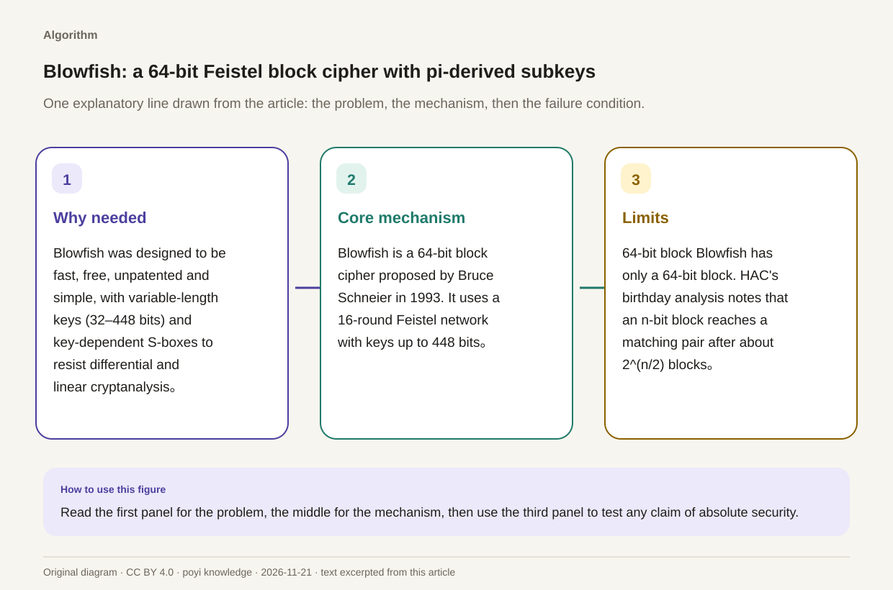
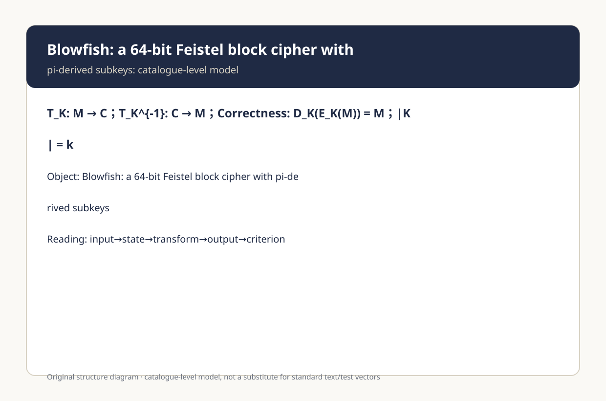

Principles
Algorithm: Blowfish (Blowfish 分组密码). Blowfish is a 64-bit block cipher proposed by Bruce Schneier in 1993. It uses a 16-round Feistel network with keys up to 448 bits; its subkeys are an 18-entry (P1–P18) 32-bit P-array and four 256-entry 32-bit S-boxes. The F function splits its 32-bit input into four 8-bit bytes a, b, c and d:
F(x) = ((S1[a] + S2[b] mod 2^32) XOR S3[c]) + S4[d] mod 2^32
Encryption splits the 64-bit block into xL and xR. Each of the 16 rounds does:
xL = xL XOR Pi
xR = xR XOR F(xL)
swap xL and xR
After 16 rounds, the last swap is undone and the block is whitened:
xR = xR XOR P17
xL = xL XOR P18
Decryption is the same as encryption but uses P18..P1 in reverse order. The P-array and the four S-boxes are initialized with "the hexadecimal digits of pi (less the initial 3"). For example P1=243f6a88, P2=85a308d3, P3=13198a2e and P4=03707344; the complete P/S table has 1042 32-bit words, or 4168 bytes. Key expansion first XORs the cyclically repeated key words into the P-array, then repeatedly encrypts the all-zero block with the current algorithm to replace P1..P18 and all four S-boxes; 521 iterations are required. The paper also notes that testing one key requires 522 encryptions, effectively adding about 2^9 steps to a brute-force attack. Blowfish keys range from 32 to 448 bits. The key is cycled, so a short key has "at least one equivalent longer key": if A is a 64-bit key, then AA, AAA and so on produce the same subkeys.

Why it matters
Blowfish was designed to be fast, free, unpatented and simple, with variable-length keys (32–448 bits) and key-dependent S-boxes to resist differential and linear cryptanalysis; the paper also calls for a flat keyspace and no weak keys. Instead of DES-style bit permutations, it uses XOR, addition and table lookups on 32-bit words, which suits 32-bit processors.
Data encryption is fast, but key expansion is heavy: every new key requires 521 encryptions. The paper positions Blowfish as a public, unpatented candidate rather than a published standard; in this article's analysis, applications that rekey frequently must weigh this setup cost.
Blowfish still has a 64-bit block. Its birthday-collision bound is about 2^32 blocks, which limits safe data volume in large deployments. In this article's assessment it is best treated as a historical and teaching case, not as a default for new designs; new designs usually need a larger block and AEAD.
Applications
The paper says Blowfish is only suitable "where the key does not change often", such as "a communications link or an automatic file encryptor"; on 32-bit processors with large data caches, such as the Pentium and PowerPC, it is significantly faster than DES, but it does not meet all new-standard requirements.
The Internet-Draft's §4 lists 34 ECB vectors with 8-byte keys. The zero-key, zero-plaintext vector is:
K = 0000000000000000
P = 0000000000000000
C = 4ef997456198dd78
The third vector is:
K = 3000000000000000
P = 1000000000000001
C = 7d856f9a613063f2
The 34 vectors are encryption checks; this article encrypts each one and verifies that decryption returns the original plaintext. Because the key is cycled, a short key and its repeated form are equivalent:
K = 01234567
K = 0123456701234567
P = 1111111111111111
C = ea55f49044fe2b24

Limits & attacks
Blowfish has only a 64-bit block. HAC's birthday analysis notes that an n-bit block reaches a matching pair after about 2^(n/2) blocks; for 64 bits this is about 2^32 blocks. In this article's analysis, this limits safe use in large data volumes.
A 521-encryption key schedule makes rekeying expensive. The paper treats it as an extra cost for brute-force search; in this article's analysis, it is also a practical burden in systems with high key turnover, and the 4168-byte subkey table should be protected as key material, not treated as public data.
Key-dependent S-boxes make differential and linear analysis harder, but an implementation still indexes four tables by input bytes; in this article's analysis, cache, timing or fault injection may leak key-dependent access patterns. This article's teaching implementation is not constant-time and does not measure side channels.
Blowfish defines only a block cipher and provides no integrity or authentication. Flipping ciphertext changes the corresponding plaintext, but Blowfish cannot detect it; this article recommends AEAD or encrypt-then-MAC when authentication is needed.
This article's teaching implementation demonstrates fixed vectors only; the batch verification script runs 34 ECB vectors, 4/8/16/24/32/56-byte key round trips, a pi-table check and one-bit diffusion. It does not generate keys, run in constant time, implement a mode of operation, protocol, key management or side-channel defenses, and must not be used in production.
History
Blowfish was proposed in the 1993 FSE paper, published by Springer in 1994, and released in the public domain with a Dr. Dobb's Journal article in 1994. The paper treats DES as "nearing the end of its useful life" and aims at a free, unpatented candidate for a new standard that runs quickly on 32-bit processors.
Twofish is a separate algorithm, not Blowfish; Twofish, DES, AES and Blowfish are separate entities.
Worked example & verification
Worked example
Take one published or standard test vector, record the input, the ordered steps and the byte-exact output, then compare with an independent implementation. Where no citable numeric vector is available, the entry records only structural steps and does not invent an output.
References
- Wikipedia search entry for Blowfish 分组密码. https://zh.wikipedia.org/w/index.php?search=Blowfish%20%E5%88%86%E7%BB%84%E5%AF%86%E7%A0%81
- Handbook of Applied Cryptography (Menezes, van Oorschot, Vanstone). https://www.cacr.math.uwaterloo.ca/hac/